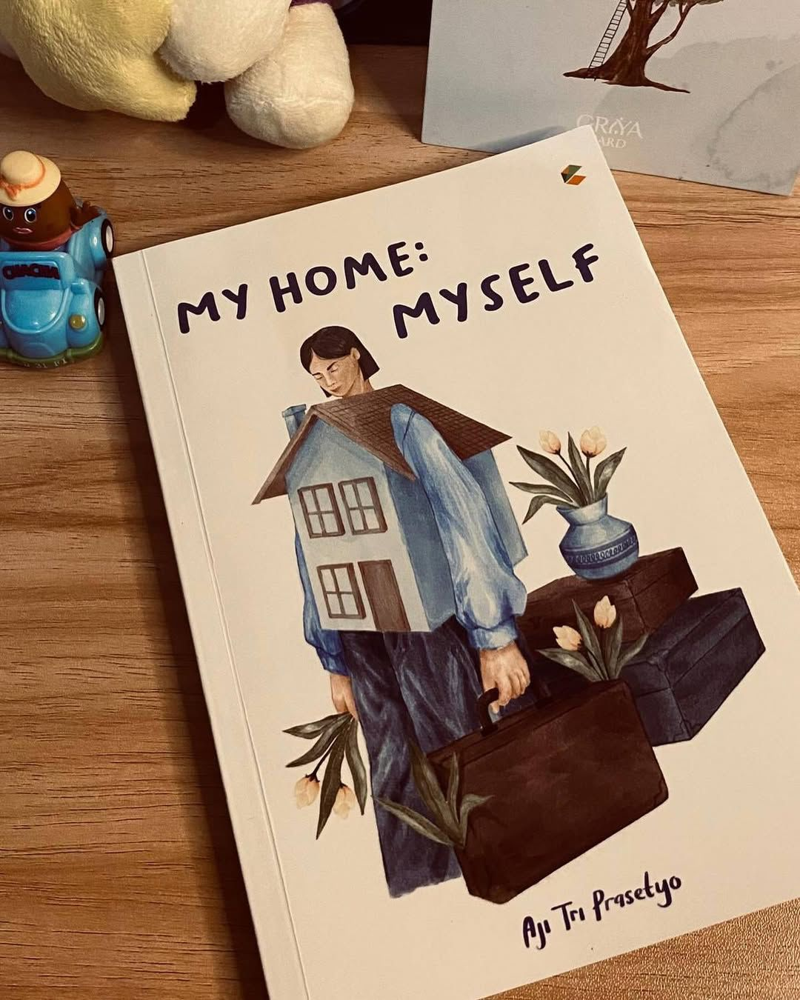
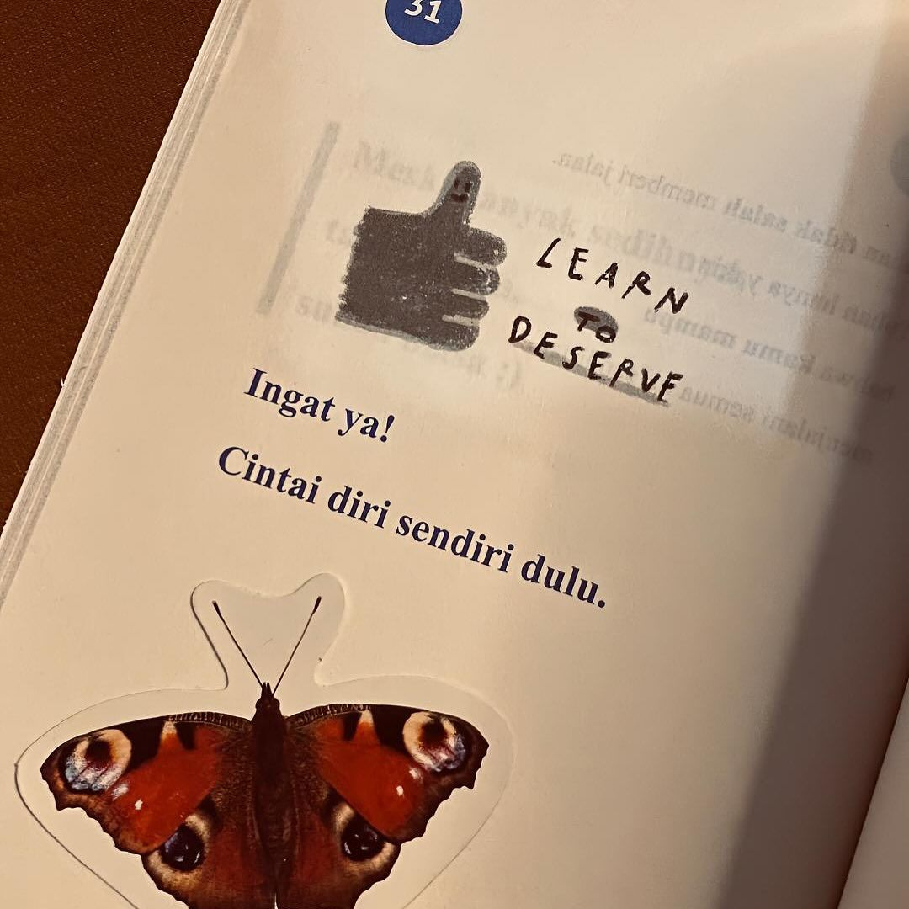
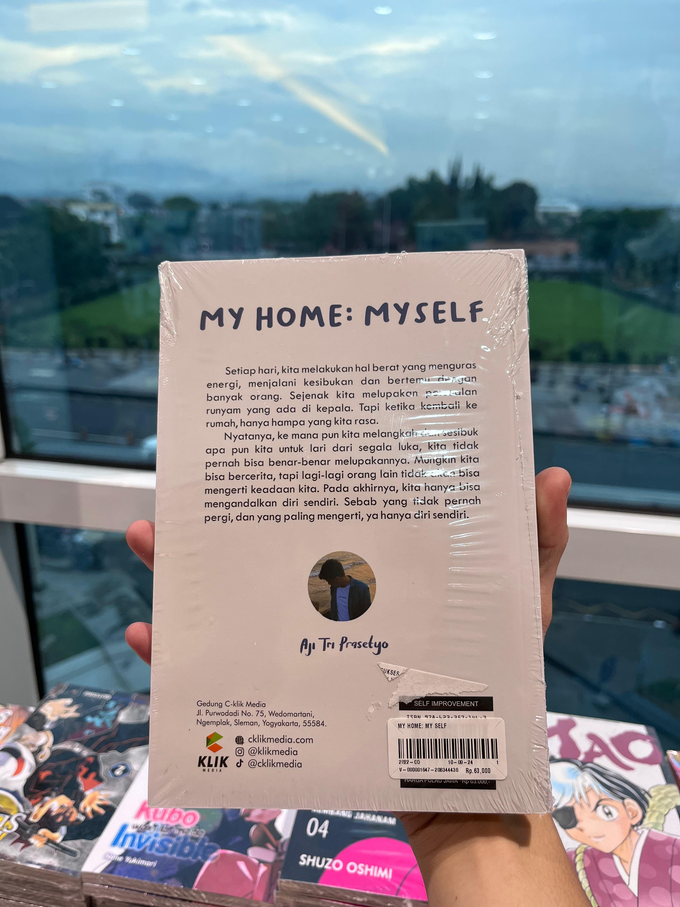

Buku Terbaru
My Home: My Self

Sebuah Perjalanan Menemukan Diri
di Ruang Pribadi.
Pernahkah Anda merasa asing di rumah sendiri? Atau justru merasa dinding kamar Anda begitu mengerti kesedihan Anda? Buku ini bukan sekadar tentang desain interior, tapi tentang interior hati.
Dalam 160 halaman, kita akan membedah bagaimana menata barang sama dengan menata pikiran, dan bagaimana membereskan ruang adalah langkah awal membereskan hidup.
- Penerbit C-Klik Media
- Rilis Februari 2024
- Genre Self-Development

Bab 1: Pondasi Diri
Bab 3: Jendela Jiwa
Epilog: Pulang